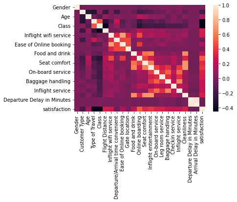
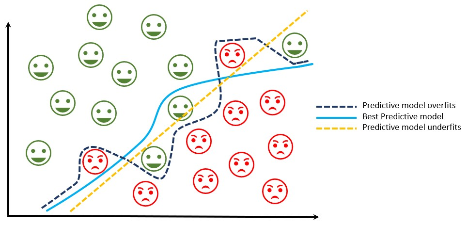

Why Data Analytics?
Data analytics stands apart from data analysis in its ability to provide guidance on actions to take and the expected outcomes. While data analysis furnishes information about the present state, data analytics makes predictions and offers insights into the potential results of specific actions. In essence, data analysis delves into the past and present, while data analytics has its sights set on the future.
The following case serves as an example of predicting customers satisfaction within flights.
CASE – WHICH CUSTOMERS ARE LIKELY TO GIVE A BAD REVIEW?
The capacity to anticipate when a customer is at a heightened risk of giving a bad review holds significant value for any business that relies on repeat customers.
To effectively apply a modeling technique for predicting satisfaction, it's crucial to comprehend the behavioral patterns and characteristics of customers that serve as indicators.
WHAT CHARACTERISTICS ARE SPECIFIC TO CUSTOMERS?
The initial step in satisfaction analysis involves the selection of customer characteristics. These characteristics can be categorized into groups, such as:
- Customer characteristics
- Customer type : Loyal / Disloyal
- Age
- Flight characteristics
- Inflight entertainment
- Departure Delay / Arrival in Minutes
- Checkin service
Typically, you start with a wide range of characteristics, often as many as 50, from which you can then identify and select those with the highest predictive power for your churn analysis.

HOW CAN WE PREDICT THE CUSTOMER SATISFACTION ?
A classification model computes the probability of satisfaction for each individual customer. This model takes into account the chosen characteristics.
Once the model is developed, it is applied to all customers so we can predict those with a bad flight experience and reach out to them.
